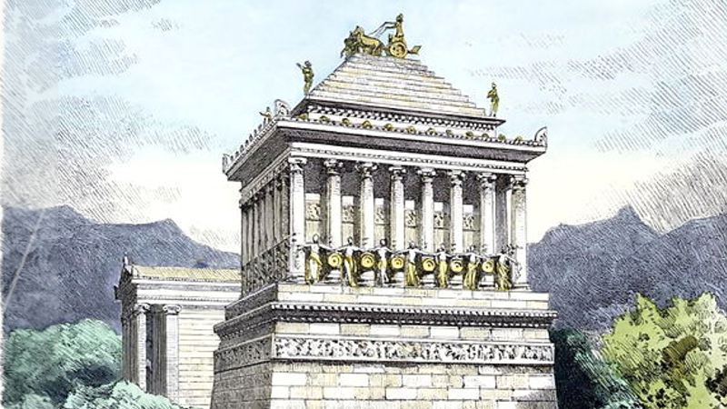

Le Mausolée d'Halicarnasse (en grec Μαυσωλεῖον / Mausôleĩon) est le tombeau de Mausole, satrape perse achéménide de Carie (Asie Mineure), mort en 353 av. J.-C.. Il était considéré dans l'Antiquité comme la cinquième des Sept Merveilles du monde antique. Halicarnasse est aujourd’hui la ville de Bodrum, au sud-ouest de la Turquie. Le monument était admiré dès l'Antiquité pour ses dimensions et sa décoration, si bien qu'on appelle « mausolée » tout tombeau de grande dimension (par exemple à Rome le mausolée de l'empereur Hadrien, actuellement nommé château Saint-Ange). Haut d'environ 45 mètres, le Mausolée d'Halicarnasse était orné de sculptures sur ses quatre côtés, chacune réalisée sous l'autorité d'un grand sculpteur grec ; ces quatre sculpteurs seraient Leocharès, Bryaxis, Scopas de Priène et Timothéos1. La Carie était une province dépendant de l'Empire perse, devenue presque autonome. Le roi Mausole déplaça la capitale à Halicarnasse, après avoir pris le contrôle de la plus grande partie du sud-ouest de l'Anatolie. Bien qu'officiellement dépendant de l'empire perse, il était de culture grecque. Il entreprit de grands travaux pour embellir et fortifier sa capitale. Il fit notamment construire un théâtre et un temple à Arès, le dieu de la guerre.